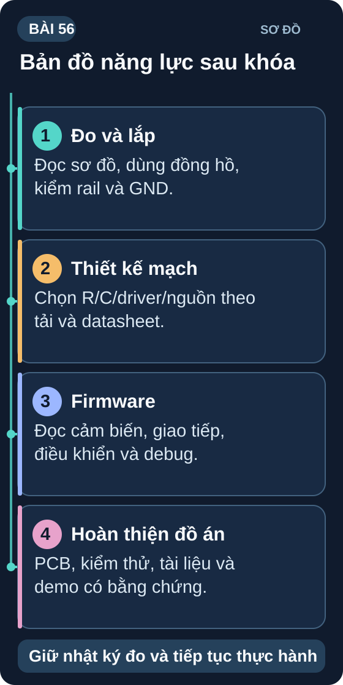

Sơ đồ tổng quan Bài 56
Bản đồ năng lực sau khóa. Giữ nhật ký đo và tiếp tục thực hành.
Nguồn: tự vẽ cho giáo trình; nội dung đối chiếu với bài học.
1. Tổng kết kiến thức 8 tuần
| Tuần | Chủ đề | Kỹ năng cốt lõi |
|---|---|---|
| Tuần 1 Bài 1–7 | Điện tử cơ bản | Ohm's Law, R/C/L, đọc sơ đồ, đo multimeter, LED + BJT |
| Tuần 2 Bài 8–14 | Linh kiện bán dẫn | Diode, BJT, MOSFET, IC op-amp, nguồn tuyến tính, relay |
| Tuần 3 Bài 15–21 | Vi điều khiển cơ bản | Arduino GPIO, PWM, ADC, interrupt, delay vs millis |
| Tuần 4 Bài 22–28 | Giao tiếp số & cảm biến | UART, I2C, SPI, ADC/DAC, DHT22, BME280, màn hình OLED |
| Tuần 5 Bài 29–35 | Mô phỏng & Nguồn | LTSpice/Falstad, oscilloscope, bộ lọc RC, Buck/Boost, KiCad, hàn SMD |
| Tuần 6 Bài 36–42 | Dự án thực tế | RTC DS3231, WiFi ESP32, Stepper/Servo, H-Bridge, HC-SR04, LiPo |
| Tuần 7 Bài 43–49 | Đồ án kỹ thuật | SRS, State Machine, PCB assembly, Integration test, Tài liệu kỹ thuật |
| Tuần 8 Bài 50–56 | Nâng cao & Tổng kết | PID, FreeRTOS, BLE, EMC, lộ trình tiếp theo |
2. Bản đồ kỹ năng đạt được
| Kỹ năng | Mức độ (1–5 ⭐) | Mục tiêu tiếp theo |
|---|---|---|
| Đọc sơ đồ mạch & datasheet | ⭐⭐⭐⭐ | Schematic thương mại phức tạp |
| Hàn & lắp ráp mạch | ⭐⭐⭐ | SMD 0402, BGA (rework station) |
| Firmware Arduino/ESP32 | ⭐⭐⭐⭐ | STM32 bare-metal, FreeRTOS nâng cao |
| PCB Design (KiCad) | ⭐⭐⭐ | 4-layer, impedance control, RF layout |
| Debug & Troubleshooting | ⭐⭐⭐⭐ | Systematic debug lỗi timing, RF |
| Mô phỏng mạch | ⭐⭐⭐ | LTSpice nâng cao, SPICE models tùy chỉnh |
| IoT & kết nối | ⭐⭐⭐⭐ | AWS IoT, MQTT5, Matter protocol |
| Tài liệu kỹ thuật | ⭐⭐⭐ | Technical spec, IEC standard documentation |
Lời nhắn từ giảng viên
Điện tử không phải là môn học bạn kết thúc — nó là hành trình bạn bắt đầu. Mỗi sản phẩm bạn build, mỗi bug bạn fix, mỗi mạch bạn hàn thành công đều là bằng chứng bạn đang tiến bộ.
Điện trở nhỏ nhất cũng có giá trị. Hãy tiếp tục tò mò, tiếp tục xây dựng, và đừng ngại hỏi khi gặp khó. Cộng đồng kỹ sư điện tử luôn sẵn lòng giúp đỡ.
— Chúc bạn xây dựng những điều tuyệt vời! ⚡
Hoàn thành khóa học
🏆 Checklist Tốt Nghiệp